La Policía Nacional ha detenido a trece jóvenes de entre 18 y 25 años , relacionados con grupos de ultraderecha de Italia y Croacia , como presuntos autores de los incendios provocados la madrugada de ayer a distintas sedes locales del Partido Popular , PSOE y Esquerra Unida.
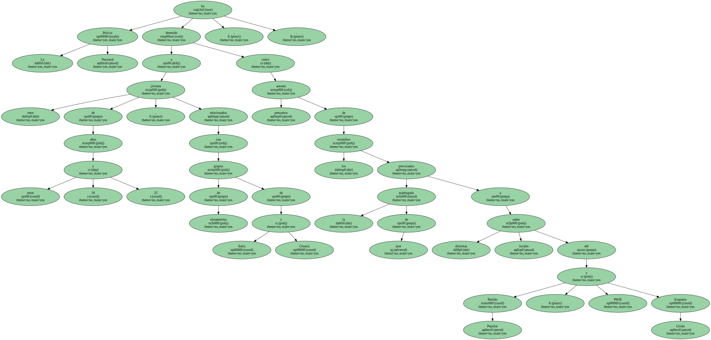Según informó hoy en conferencia de prensa el Delegado del Gobierno en la Comunidad Valenciana , Carlos González Cepeda , los detenidos , pertenecientes a la denominada " Hermandad Nacional Socialista Armagedon " , presentaban en algunos casos antecedentes policiales por peleas y agresiones racistas.
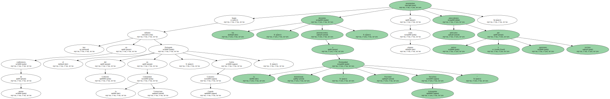El Jefe Superior de Policía de la comunidad valenciana , Segundo Martinez , descartó que exista alguna relación entre los incendios de Valencia y los artefactos que estallaron hoy en la sede del PSC catalán y del Instituto Nacional de Estadística , de Barcelona.

Este grupo , al que se le ha incautado armas blancas y símbolos nazis , tenía como objetivo entorpecer el desarrollo de la campaña electoral y pensaba seguir cometiendo atentados similares a los ocurridos hasta el día de las elecciones.
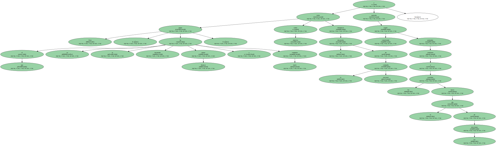Los integrantes de este grupo , tres de los cuales eran mujeres , fueron detenidos entre las 15 horas de ayer y las 7,30 horas de hoy en diferentes domicilios situados en la ciudad de Valencia y las localidades de Xátiva y Llombai.
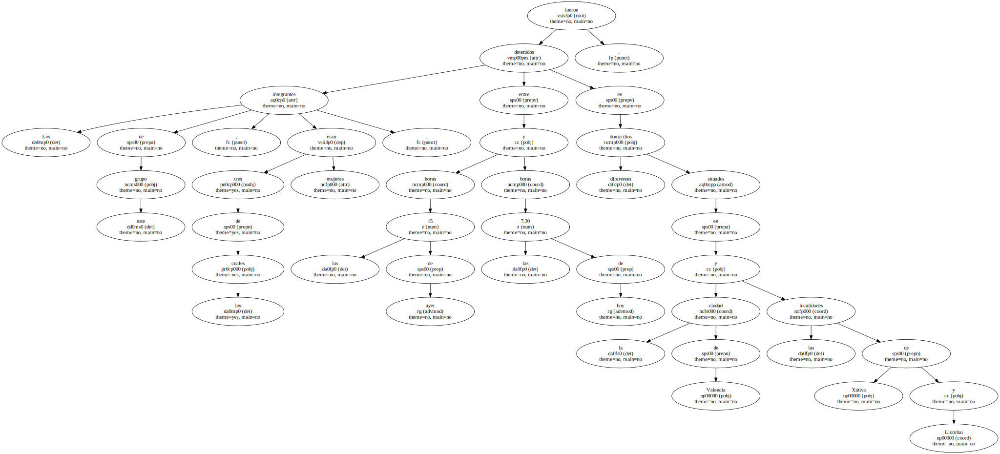En esta última localidad estaba la sede del grupo , donde se encontraron numerosos panfletos propagandísticos y ejemplares del boletín " Resistencia " , órgano de difusión ideológica.
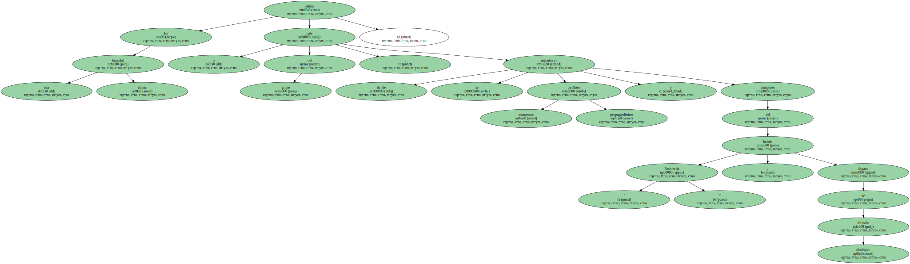También se les incautó dinero en metálico obtenido , al parecer , de camisetas y boletines , así como de la recaudación de una fiesta organizada recientemente en una conocida discoteca valenciana para poder financiar sus actividades.
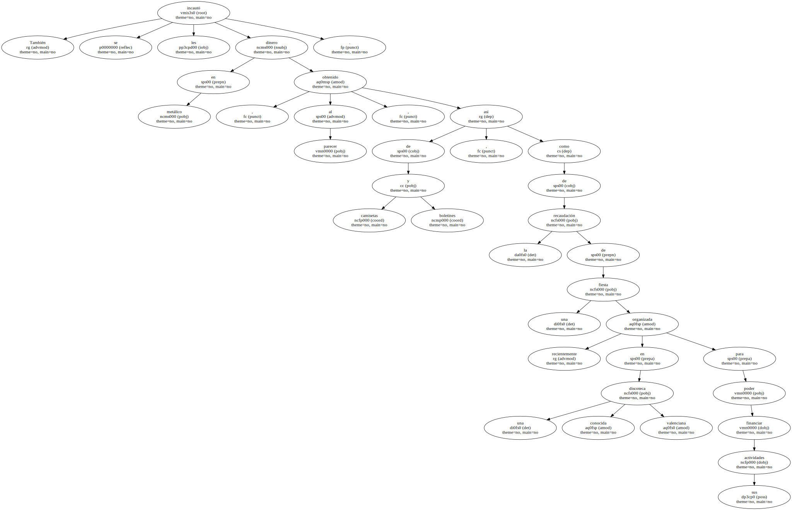Algunas de estas personas , alertadas de que la policía iba a detenerles , fueron sorprendidas en la calle cuando intentaban deshacerse de parte del material incautado.
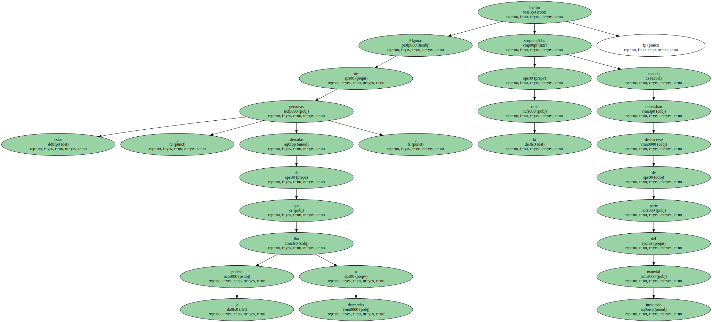El Jefe Superior de Policía de la Comunidad Valenciana , Segundo Martínez , aseguró que en los próximos días se efectuarán más detenciones , ya que desde la creación de " Armagedon " , en diciembre de 1998 , efectivos policiales están investigando sus actividades y algunos de sus presuntos componentes ya han sido detenidos con anterioridad por provocar reyertas en campos de fútbol de Valencia , Albacete y Madrid.
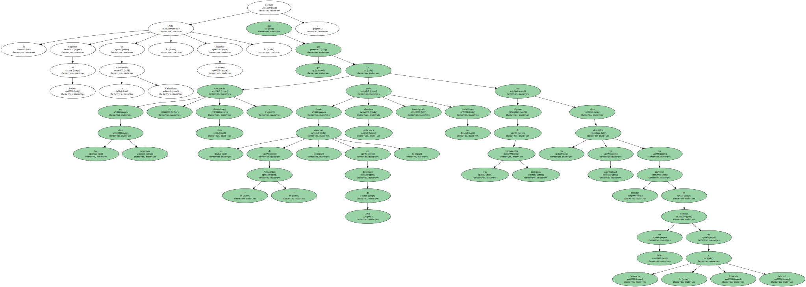Martínez calificó este grupo de " muy violento " y dijo que " actúa cuando puede " , y descartó que exista alguna relación entre las agresiones contra las sedes de los partidos y la extradición del ex dictador chileno Augusto Pinochet o con los atentados producidos esta noche en otras sedes de Barcelona.
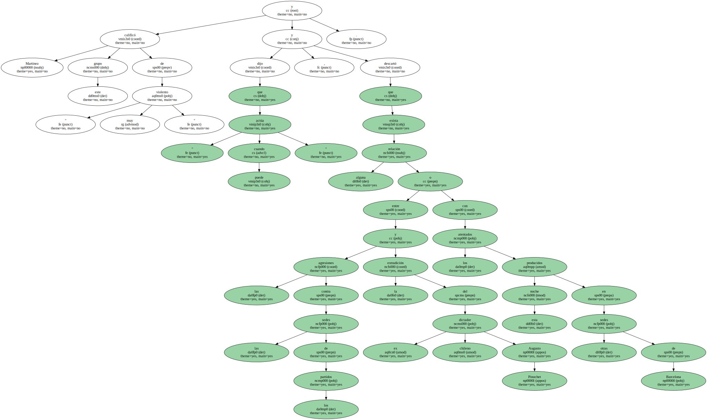Según el delegado del Gobierno en la Comunidad Valenciana , Carlos González Cepeda , se trata de un grupo " de ultraderecha " que protagoniza actos de este tipo durante la campaña electoral para darse a conocer " aprovechando la coyuntura de una noche favorable ".
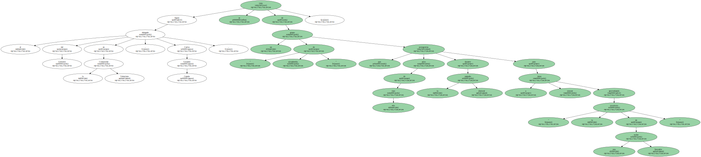González Cepeda , que aseguró que los detenidos no tienen ninguna vinculación con los grupos neonazis asentados en la localidad valenciana de Los Pedriches , explicó que éstos realizaron con anterioridad cursos de adiestramiento ideológico y de utilización de armas.
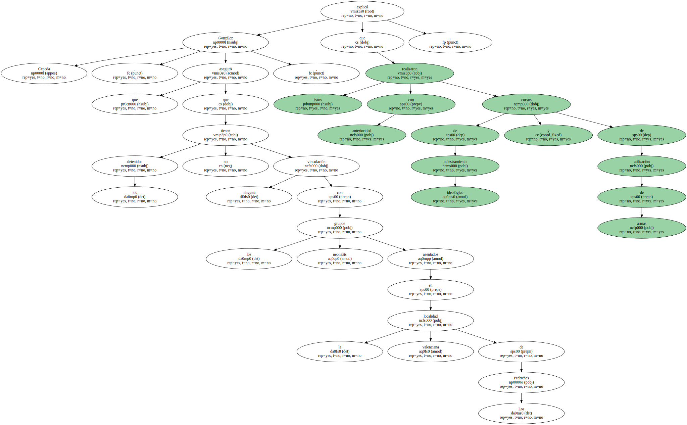La Hermandad Nacional Socialista Armagedón constituye una escisión del grupo Acción Radical en 1994 y del Frente Antisistema , vinculado con los fascistas italianos en 1997 , y está relacionado con grupos de las mismas características de Sevilla , León y Madrid.
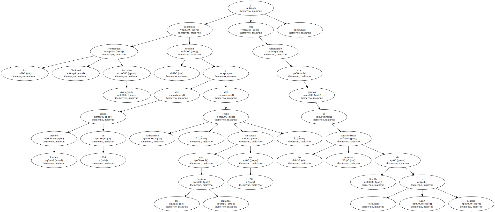Sus integrantes realizaron anteriormente ataques a otras sedes de partidos de las mismas características que los de ayer y eran investigados por la policía al participar en algunas peleas de carácter racista , lo que ha provocado su rápida detención.

El delegado del Gobierno en la Comunidad Valenciana anunció que el próximo Lunes mantendrá una reunión con los responsables de los diferentes partidos políticos para " tranquilizarles " y garantizar la protección de las sedes " en la medida de lo posible ".
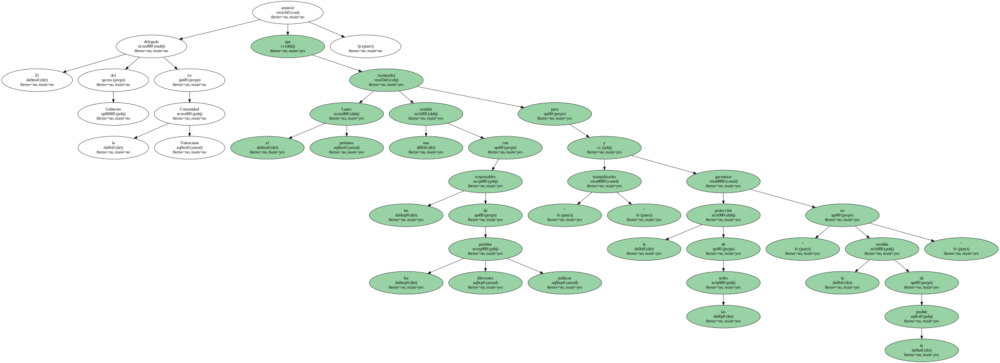González Cepeda aseguró que se ha puesto en marcha un " razonable " dispositivo de seguridad para que lo queda de campaña se desarrolle con normalidad y " no se vea entorpecida por grupos fascistas ".
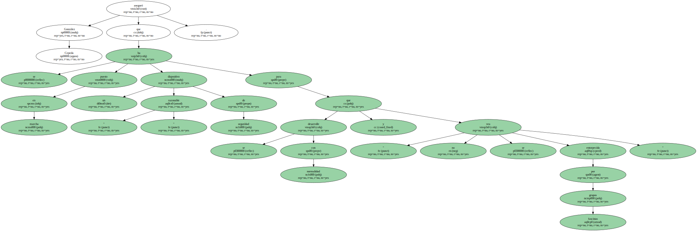Esta operación , calificada por el delegado del Gobierno de " brillante " , fue dirigida por el titular del juzgado de Instrucción número 14 de Valencia.
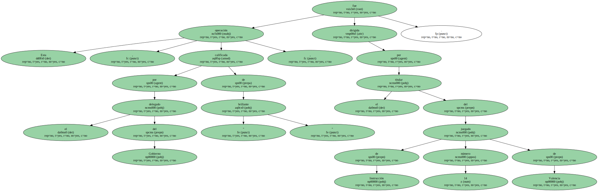